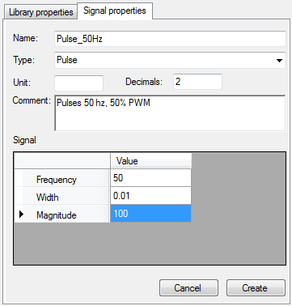

Click a signal node  to edit its properties or click the ‘Create new signal’ button to create a new signal.
to edit its properties or click the ‘Create new signal’ button to create a new signal.

A built-in signal has several properties:
Set, at least, the signal name and type as well as its math properties and then click the ‘Create’ button to create the signal. In case of signal edition, this button will become ‘Modify’, just click it to apply all changes you may have done.
Created with the Personal Edition of HelpNDoc: Free EPub and documentation generator